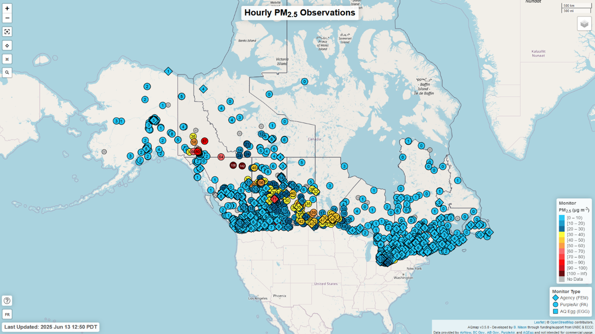
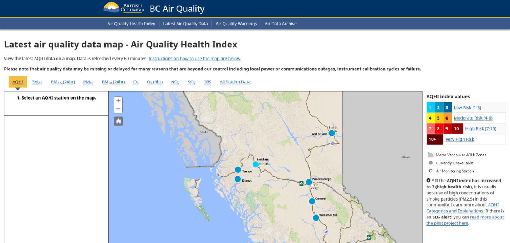
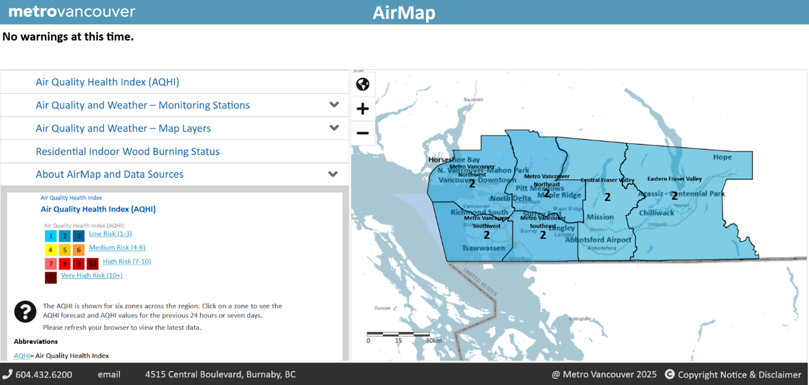
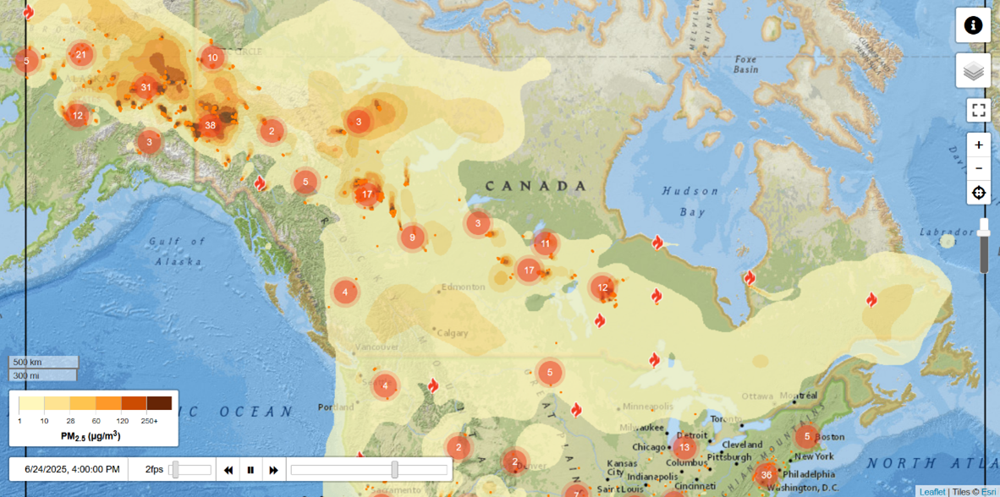
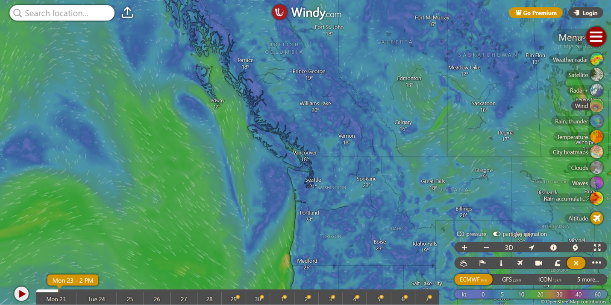

About the UBC Community Clean Air Spaces Study Dashboard
This dashboard provides near-real-time air quality information for the Vancouver Coastal Health region. It uses low-cost air quality sensors deployed across the Vancouver Coastal Health Authority to provide hyperlocal data.
What is the Air Quality Health Index (AQHI+)?
The AQHI is a 1–10+ scale indicating how air pollution may affect your health. British Columbia recommends the use of AQHI+ (AQHI-Plus), which is very similar to the older AQHI but better suited to conditions with high particulate matter (e.g., wildfire smoke).
AQHI+ helps you make choices to protect yourself—such as reducing time outdoors or changing activities—especially if you are more sensitive to air pollution. Risk categories are grouped as Low (1–3), Moderate (4–6), High (7–9), and Very High (10+).
The data collected by our sensors is used to calculate the outdoor AQHI+. Learn more below: AQHI scale and how the index is calculated.
How to read the AQHI+ scale
The Air Quality Health Index (AQHI) scale is designed to help you identify the level of health risk associated with outdoor air quality. The AQHI+ scale is an updated index that is designed to capture sudden or temporary spikes in pollution from wildfire smoke. Both the AQHI and AQHI+ scales range from 1–10+, grouped into health-risk categories:
- 1–3: Low health risk
- 4–6: Moderate health risk
- 7–9: High health risk
- 10+: Very high health risk
Vancouver Coastal Health recommends avoiding strenuous outdoor activities (like running) during periods of poor air quality, and provides specific guidance for periods of wildfire smoke: Wildfire smoke guidance — VCH (opens in a new tab)
How is the AQHI calculated?
The AQHI is calculated based on the relative risks of a combination of common air pollutants that is known to harm human health. In British Columbia, two calculations are done and the higher value is reported:
-
A calculation using three pollutants:
- Ozone (O3) at ground level,
- Fine Particulate Matter (PM2.5), and
- Nitrogen Dioxide (NO2).
- Fine Particulate Matter (PM2.5) concentration alone.
This means that in periods of high PM2.5 concentrations, the AQHI+ depends exclusively on PM2.5 concentrations.
Other Air Quality Resources
The resources below can complement this dashboard by providing additional air quality, smoke, and weather information.
AQ Map
AQ Map is a useful source for PM2.5 data in BC and across Canada. Clicking a monitor shows AQHI and PM2.5 concentrations over multiple averaging periods, and also allows time-series plotting. It includes federal reference monitors and lower-cost sensors such as those on the PurpleAir network. This project’s outdoor monitors do not appear on this map as we are a temporary setup.

BC Air Quality Map
Open BC Air Quality map
Open mobile-friendly version
This map shows AQHI, PM2.5, and other criteria pollutant concentrations measured at stations throughout British Columbia using reference-grade monitoring stations. They provide the most accurate measurements available, but not every station measures all pollutants. Tabs above the map allow users to switch between pollutant views.

Metro Vancouver AirMap
AirMap is specifically for Metro Vancouver residents. It includes AQHI by region, forecasts, monitoring station data, and more.

FireSmoke Canada
FireSmoke Canada is a helpful resource for wildfire-smoke forecasts and projected PM2.5 concentrations from active wildfires. It also provides access to fire weather forecasts and other wildfire-related resources.

Windy.com
Windy.com is a useful place to view wind and weather forecasts alongside the other air quality resources listed here.

Sign up for air quality alerts
Contact & Feedback
Questions or suggestions? Email the team at HelloAirQuality@mech.ubc.ca.